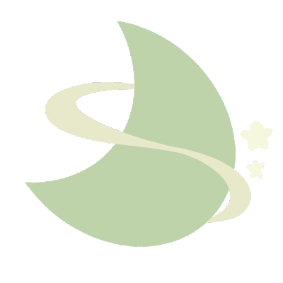

StarD - 올인원 스터디 웹 플랫폼
스터디 모집과 관리를 한 곳에서 하는 웹 사이트

- 진행 기간
- 2023.03.24 – 2023.11.30
- 진행 기관
- 한이음
- 팀 구성
- 프론트엔드 2명, 백엔드 3명 (담당: 백엔드)
- 수상
- 교내 소프트웨어 경진대회 본선 10개 팀 중 우수상
사용 기술 및 개발 환경
- 프론트엔드: React, Bootstrap
- 백엔드: Spring Boot, Spring Data JPA, MySQL, Redis
- UI 설계: Figma
- 배포: AWS, EC2
담당한 기능
- 마이페이지: 정보 수정, 작성한 글 및 댓글, 참여 중인 스터디 등 회원 관련 내용 조회, 회원 탈퇴
- 커뮤니티: CRUD, 검색
- 좋아요, 스크랩 기능
- 스터디 팀블로그
- TODO: CRUD, 상태 변화 (완료, 미완료)
- 일정: CRUD
- 커뮤니티: CRUD, 파일 다운로드, 검색
- 팀원 평가: CRUD, 개인 신뢰도 조회 및 변경
- 장소 추천: geocoding, 장소 추천 알고리즘
- Swagger 에러 응답 값 관련 config
해결한 문제
관심분야를 삭제했더니 회원 정보가 함께 삭제된 문제
- 상황
- 회원의 관심분야 하나를 삭제하면 해당 회원 정보 전체가 함께 삭제됐습니다. 자료마다 설명이 달라 며칠을 헤맸고, JPA의
cascade와orphanRemoval옵션을 바꿔봐도 회원이 삭제되지 않는 대신 다른 문제가 생기는 식으로 문제가 자리만 옮겨 다녔습니다. - 원인
- 옵션을 하나씩 바꾸며 결과를 직접 확인한 끝에, 관심분야 엔티티에서 회원을 참조하는
@ManyToOne에 걸어둔cascade ALL이 삭제 이벤트를 회원 엔티티까지 전파하고 있다는 걸 찾았습니다. - 해결
- 옵션을 제거해 해결했습니다. 이후에는 연관관계를 설정할 때 한쪽의 변경이 반대편 데이터에 어떤 영향을 주는지부터 확인합니다.
장소 추천 결과가 한쪽으로 쏠리는 문제
- 상황
- 참여자 위치의 중간 지점을 추천하는 기능을 처음에는 좌표의 단순 평균으로 구현했는데, 참여자가 한쪽 지역에 몰려 있으면 추천 결과도 그쪽으로 쏠렸습니다.
- 원인
- 같은 지역에 몰린 사용자들이 결과에 여러 번 반영되는 구조였습니다.
- 해결
- 볼록 껍질(Convex Hull)과 그라함 스캔으로 좌표의 외곽선만 추출하고, 외곽 좌표로 균형점을 계산하도록 바꿨습니다. 참여자 위치를 일부러 한쪽에 몰아 테스트해 결과가 더 이상 쏠리지 않는 걸 확인했습니다.
팀블로그 파일 첨부 수정 방식 개선
- 상황
- 게시글에는 파일을 최대 5개까지 첨부할 수 있었고, 수정할 때 기존 파일 유지, 일부 삭제, 새 파일 추가, 삭제와 추가 동시 진행이 한 번의 요청에 섞여 있었습니다. 처음에는 수정할 때마다 기존 파일을 전부 지우고 새로 받은 파일을 다시 저장했는데, 글 내용만 고쳐도 파일이 매번 다시 올라간다는 팀원의 지적이 있었습니다.
- 해결
- 삭제할 파일의 ID 목록과 새로 추가할 파일만 서버로 보내 변경분만 처리하도록 바꿨습니다. 최대 5개 제한은 기존, 삭제, 추가 파일 수를 모두 계산해 검증했습니다.